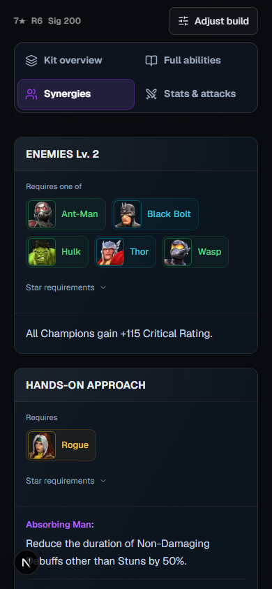
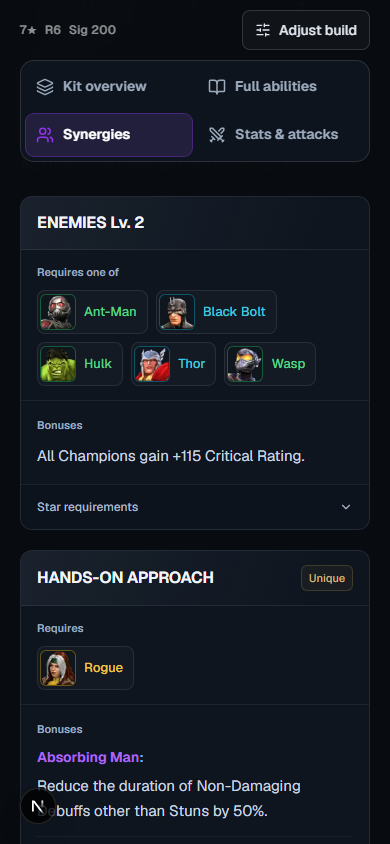
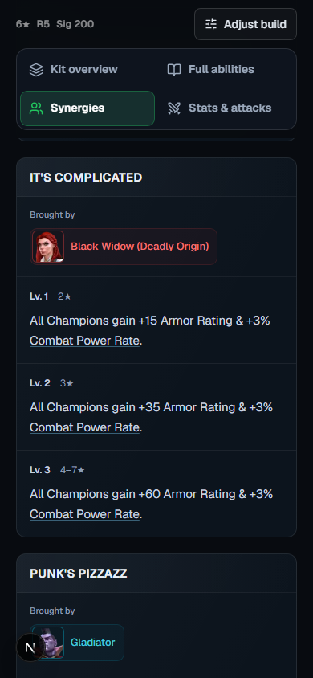
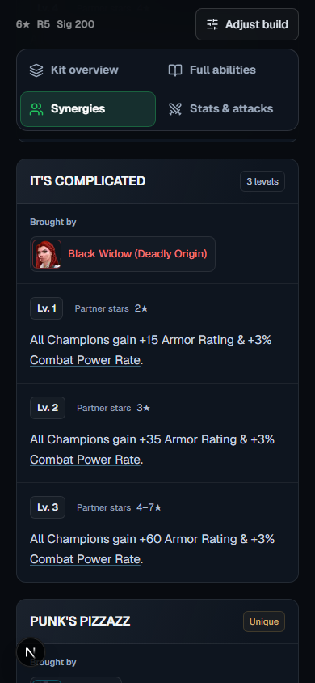
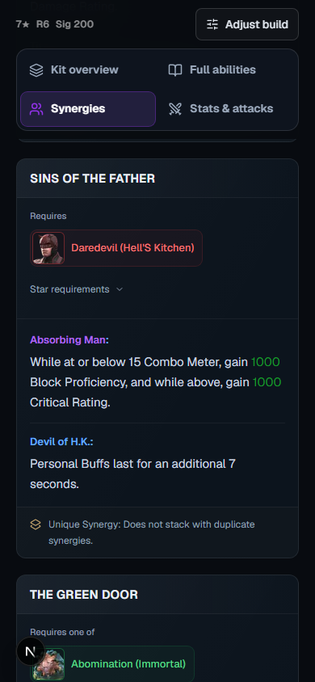
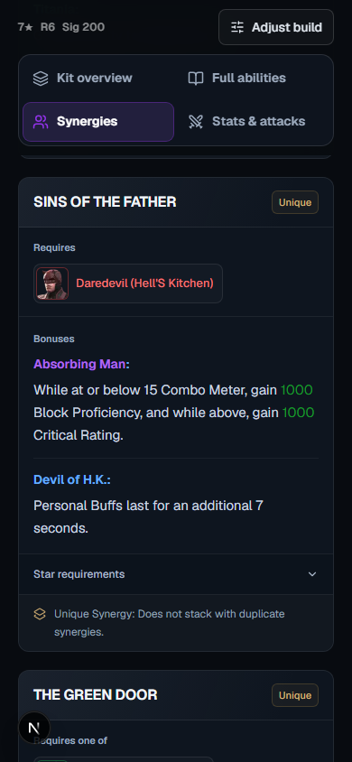
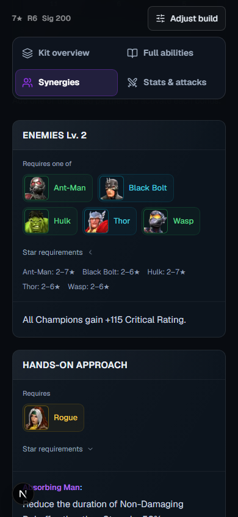
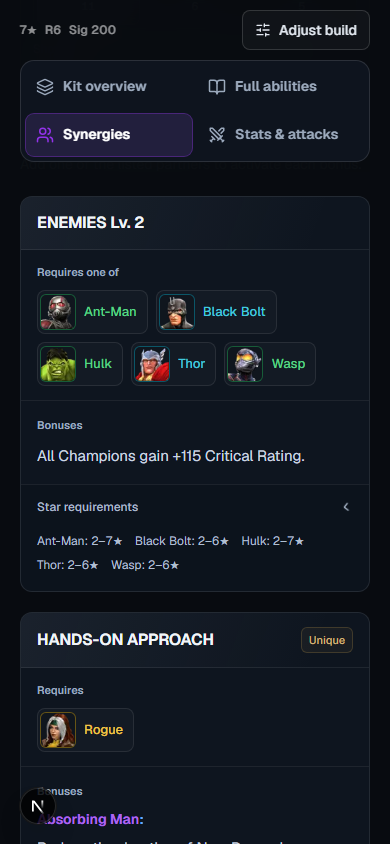
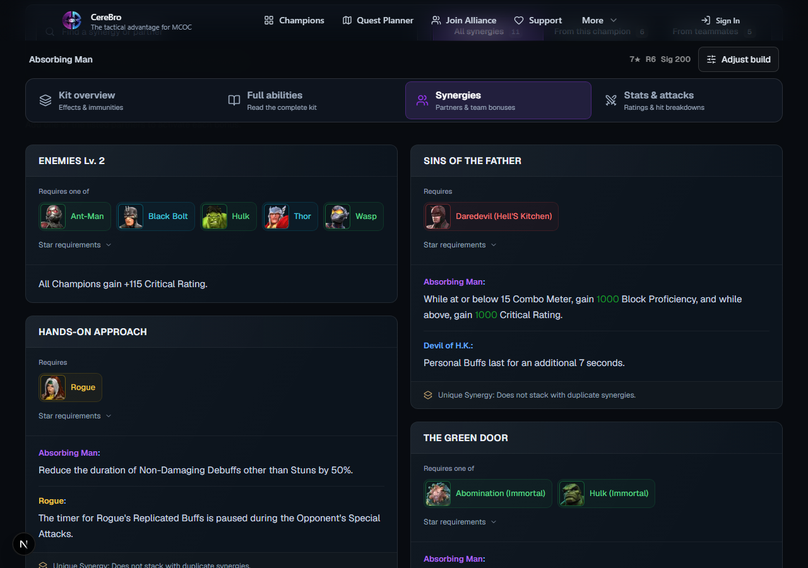
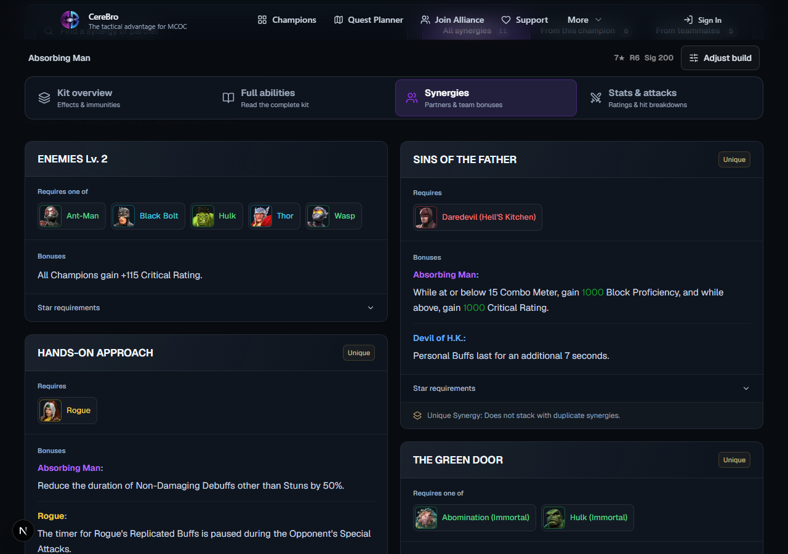
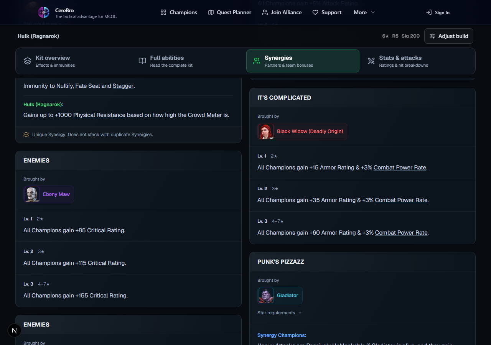
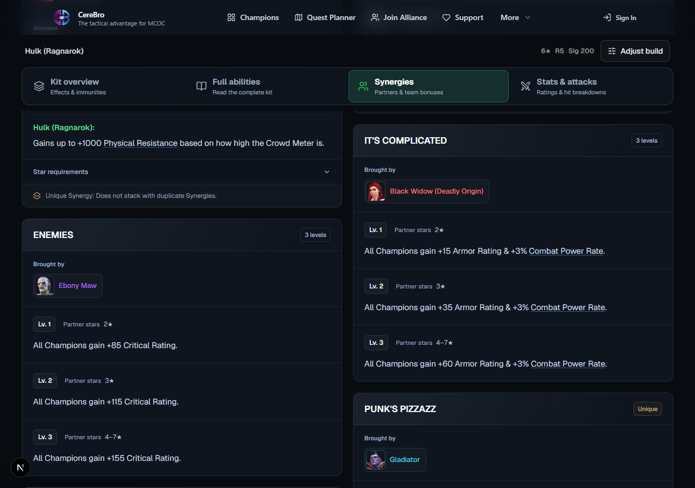
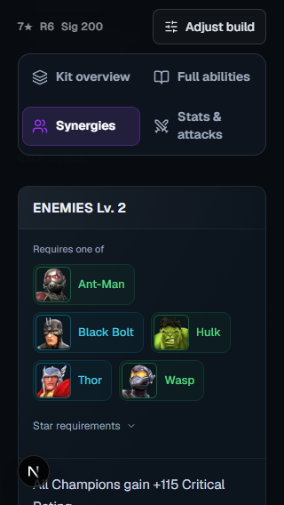
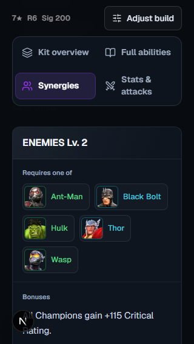
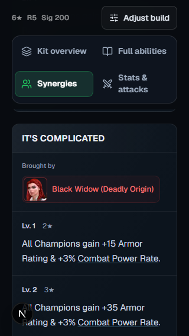
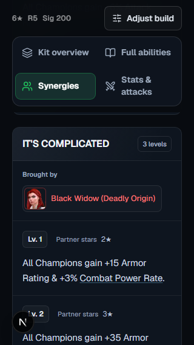
Real screenshots from the same local Chromium setup, signed out, DPR 1. Cards align below persistent navigation; viewport and build match within each pair. Use Before only / After only to inspect desktop captures at full width.